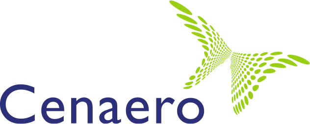
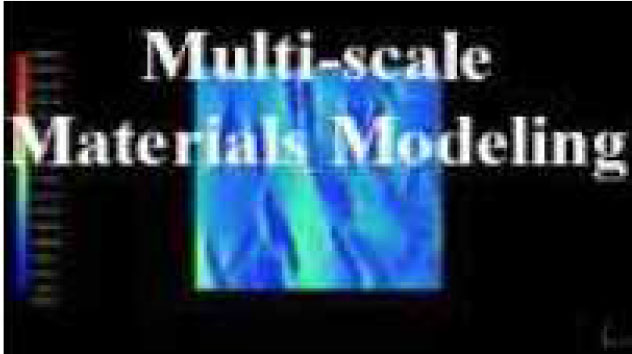
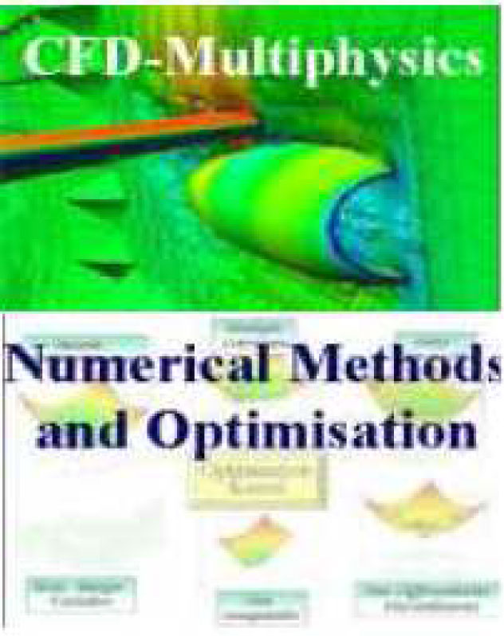
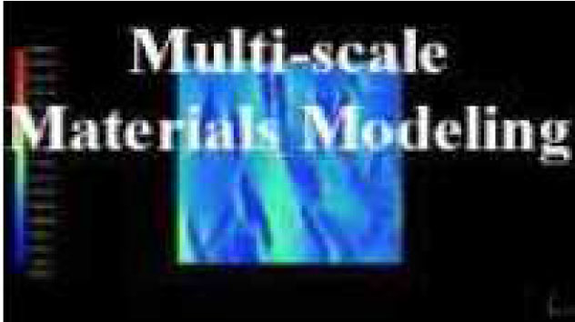
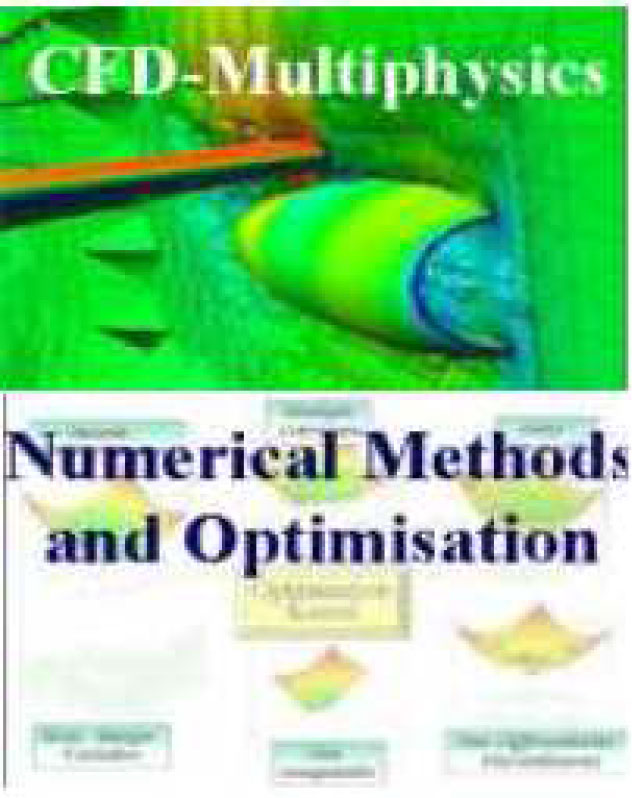

CENAERO, the Centre of Excellence in AEROnautical research, is an applied research centre with focus on the development of multidisciplinary simulation technologies for Aeronautics
- Virtual Manufacturing: simulation of welding (fusion or friction processes, in particular Friction Stir Welding, Laser and Electron beam welding), machining, forming, etc.
- Multiscale Material Modelling: fatigue and rupture analysis by integration of new numerical methods capable of propagating cracks inside of 3D parts and composites. Development of models for fatigue of bonded joints, micro-meso-macro modelling
- CFD-multiphysics: simulation of large scale turbulent unsteady flows with emphasis on aero-acoustics and fluid-structure interaction. Large mesh generation around very complex geometries
- Multidisciplinary Optimisation: Parallel, multi-objective, multi-constrained optimization. Typical application : turbomachinery blade shape optimization. Our MAX tool provides native access to CAD systems such as CATIA V5 or Unigraphics

 
Contact Person
Mr Bernard Voss
Sales & Marketing
email: bernard.voss@cenaero.be, vincent.marchal@cenaero.be
tel: +32 71 91 09 40
fax: +32 71 91 09 31
http://www.cenaero.be
Eole Building
Rue des Frères Wright 29
6041 Gosselies
Belgium
 
Contact Person
Mr Bernard Voss
Sales & Marketing
email: bernard.voss@cenaero.be, vincent.marchal@cenaero.be
tel: +32 71 91 09 40
fax: +32 71 91 09 31
http://www.cenaero.be
Eole Building
Rue des Frères Wright 29
6041 Gosselies
Belgium